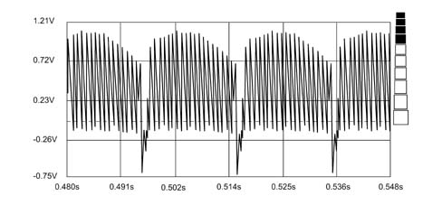
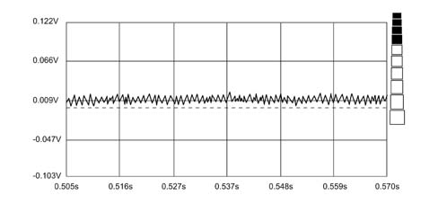

5580PG CHECKING OPERATION OF CONNECT PARKING TV CAMERA MODULE
- Path
- Test > 55 ELECTRICAL EQUIPMENT > 5580 SPECIAL ACCESSORIES > 5580P CONNECT PANEL > 5580PG CHECKING OPERATION OF CONNECT PARKING TV CAMERA MODULE
- Kind
- test / check procedure
- Applies to
- engines: 2.0 16V; all production periods
- Interactive page
- https://sloeber94.github.io/elrnDB-fDct/en/#/244000594
Applies to: engines: 2.0 16V; all production periods
With the Examiner in Instrument mode and set to the Voltmeter function, check that the parking TV camera power supply (battery voltage +12 volts) is present at the Connect output.
Connect the postive contact (red) of the Examine to the central wire of the coaxial cable leading from the parking TV camera, and the negative contact (black) to the vehicle earth.
Turn on the Examiner and select the Voltmeter function while in Instrument mode. Select full scale deflection of 20 volts and a time base of 1 s (measure with TV camera on and lens covered by a dark cloth). Then plot a graph of the signal on the coaxial cable.
Enlarge the resulting voltage graph until the shape is similar to the following drawing

Check that the voltage and time values are similar to the drawing.
Although images are not displayed on the Connect screen, the Examiner tester states that the parking TV camera is working and the cause must therefore lie in the Connect system
If the wave form is not as described, this may indicate several possible faults:
if the graph plot is very close to zero (fluctuates between - 0.15 Volt and + 0.15 Volt) as shown in the following drawing, the line (coaxial cable leading from the parking TV camera) must be short-circuited between the central wire and the external mass or the TV camera is faulty

If the voltage graph plot is far from zero (fluctuations with voltages greater than - 20 Volts and +20 Volts). The line (coaxial cable leading from the parking TV camera) is in open circuit, i.e. the central wire and/or earth are not connected, or the TV camera is faulty.
Carry out the same tests at the TV camera terminals to rule out possible wiring faults.